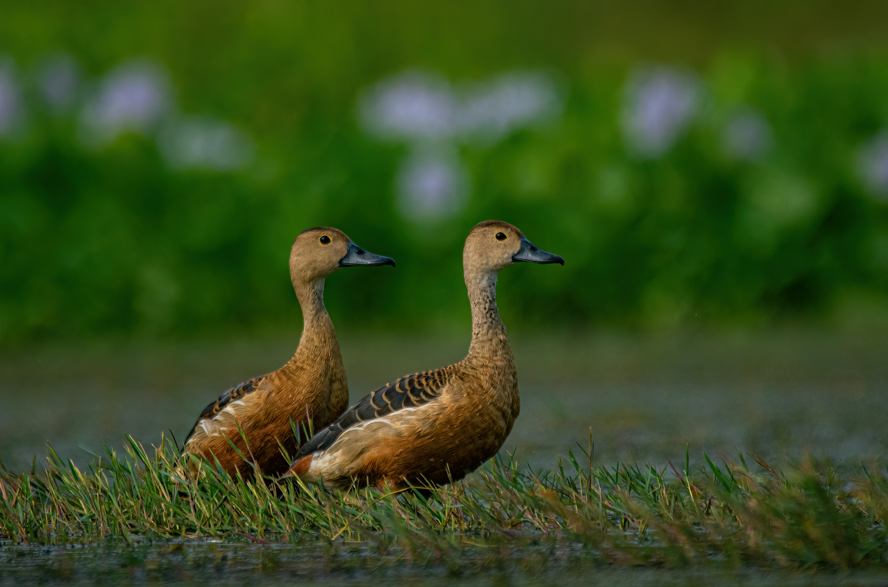

The Lesser Whistling Duck is a small, brownish duck with a rounded head and longish neck. It is often seen in large groups on ponds, lakes, marshes, rice fields, and other freshwater habitats. It feeds on aquatic vegetation, seeds, insects, and small aquatic animals. Its high-pitched whistling calls are especially noticeable when groups take flight.